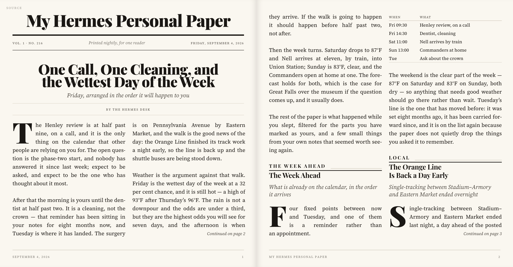

A nightly run
Hermes Paper Agent · write → check → fix
04:00 · the run
editions/2026-09-04/articles

no articles yet
—
Four data desks · prose over the inbox · the lead runs last
Never publish on red.